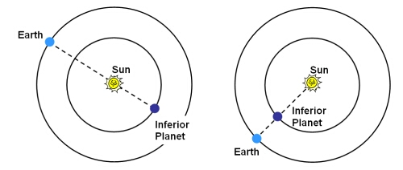

The inferior planets are those which orbit closer to the Sun than the Earth, namely Mercury and Venus. They are seen to undergo phases ranging from crescent to full, and also exhibit retrograde motion.
When an inferior planet is positioned so that it has the same right ascension on the celestial sphere as the Sun, it is said to be at conjunction. If the planet is located between the Sun and the Earth, an inferior conjunction occurs and the planet will occasionally be seen transiting the Sun. If it is located on the opposite side of the Sun to the Earth, it is said to be at superior conjunction.

Unlike superior planets, inferior planets can never reach quadrature or opposition. Instead, they reach a maximum eastern or western elongation: 18 to 28 degrees for Mercury and 47 to 48 degrees for Venus.